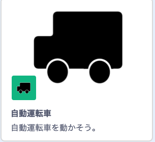
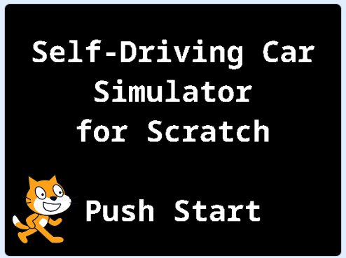

シミュレータを起動しよう
1
シミュレータにアクセスしよう
ではさっそくスクラッチをつかって自動運転車プログラミングを体験してみましょう。
といっても普通のスクラッチでは自動運転車プログラミングを学ぶことは難しいので、今回はスクラッチをカスタマイズしてつくられたシミュレータを使います。
このシミュレータはスクラッチを利用する簡易(かんい)的なものですので、プロの技術者が使っているような本格的なシミュレータほどの機能はありません(例えばリアルタイムにハンドルを操作して曲がる角度を決めるといった高度な操作はできません)。 それでも以下のようなプログラミング体験が可能になっています。
- マップを表示して走行ルートを選択する
- ナビゲータや各種センサーの情報を利用してリアルタイムに速度を変化させる
2
シミュレータを起動する
では下のリンクをクリックしてシミュレータにアクセスしてください。
https://tmytokai.github.io/SDCScratch/
このサイトにアクセスすると普通のスクラッチの画面が出てくるだけで、そのままではシミュレータをつかえません。 そこで以下の手順でシミュレータを起動しましょう。
- 画面の左下にある「＝」みたいなボタンを押します。
- 「拡張機能を選ぶ」の画面が出たら「自動運転車」をクリックします。 
- しばらくするとシミュレータ用のブロックが追加され、タイトル画面が表示されます。 